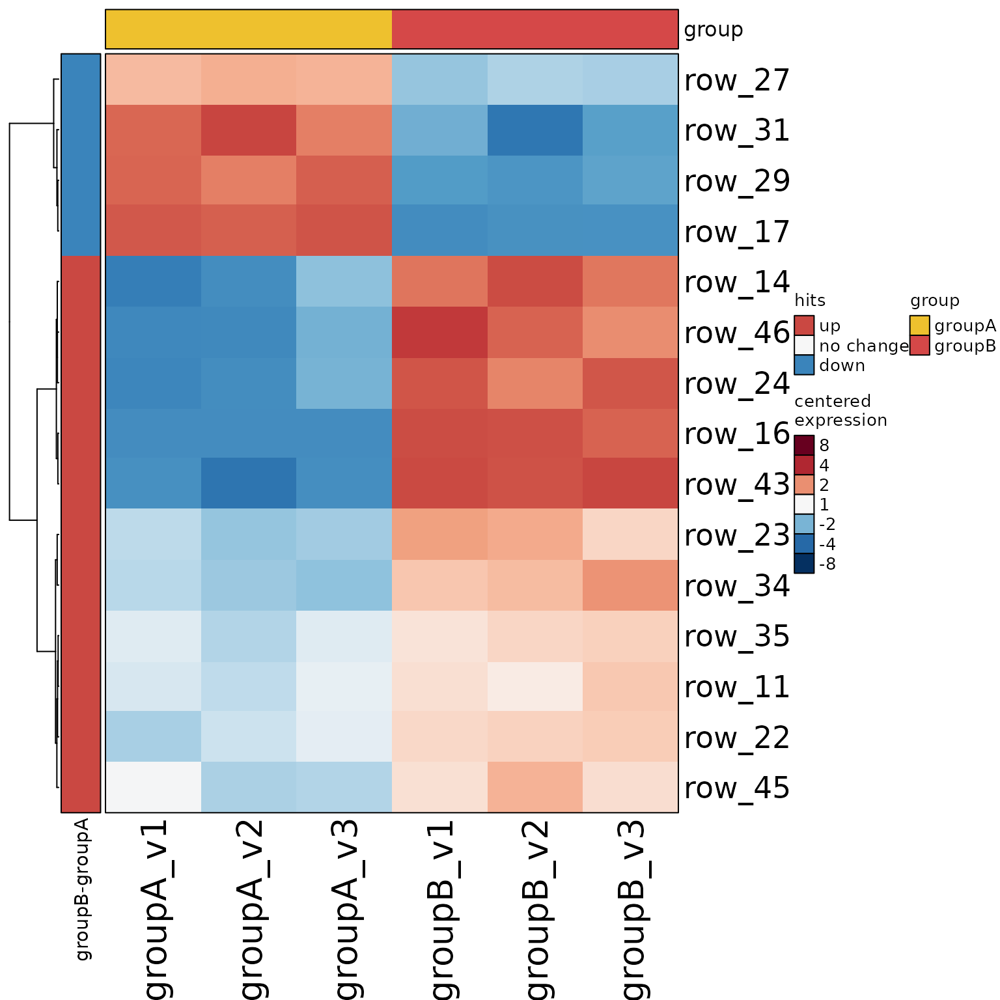
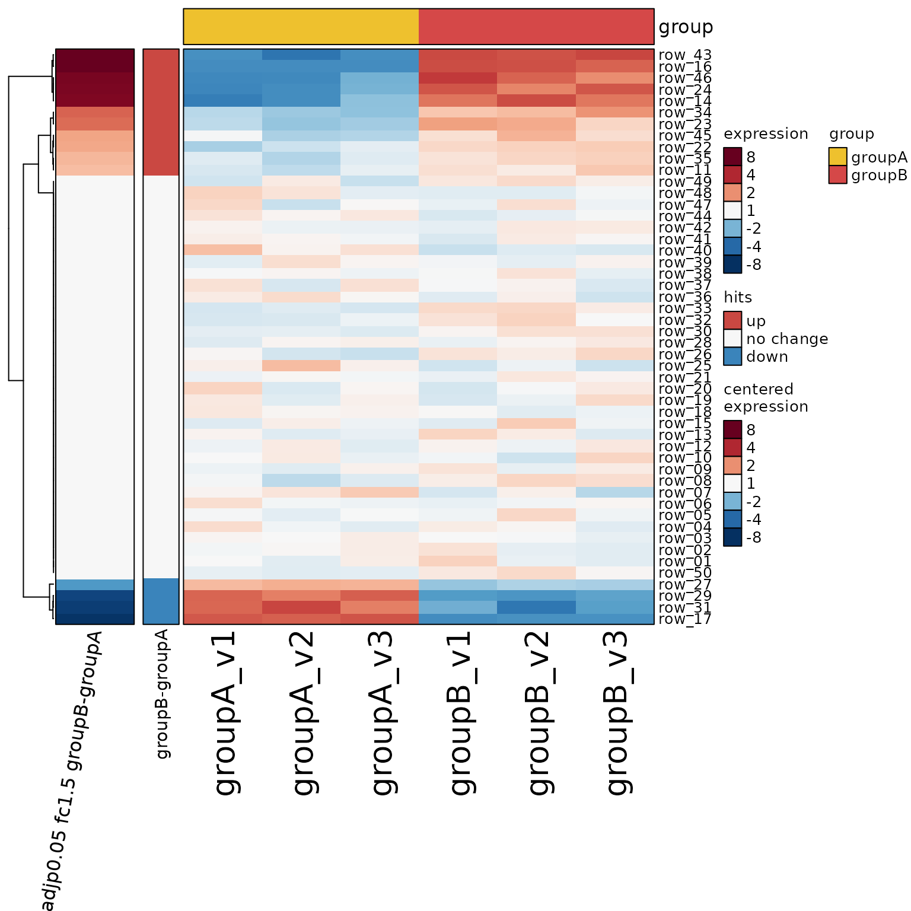
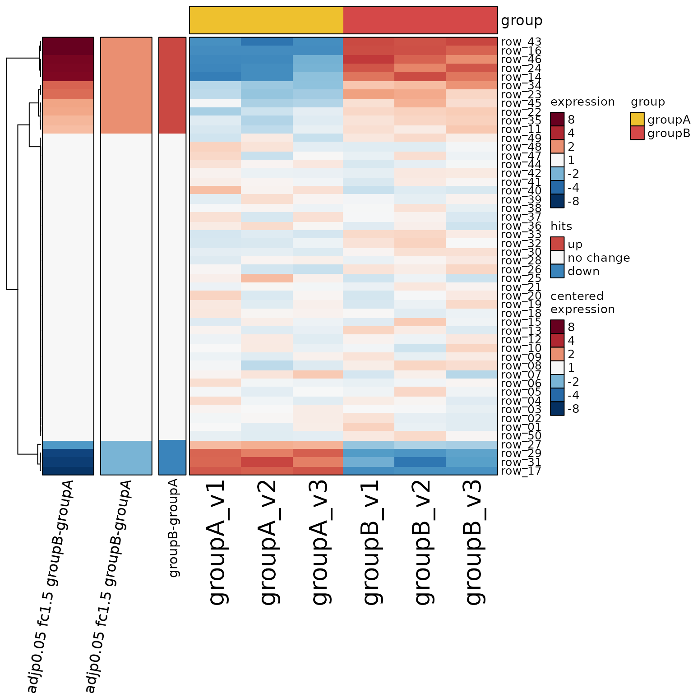

Save SE contrast stats output
Usage
save_sestats(
sestats,
file = NULL,
assay_names = NULL,
contrast_names = NULL,
cutoff_names = NULL,
type = c("xlsx", "list"),
data_content = c("data", "hits"),
hits_use_lfc = FALSE,
max_nchar_sheetname = 31,
abbreviate = FALSE,
review_output = TRUE,
sheet_prefix = NULL,
use_assay_suffix = TRUE,
width_factor = 1,
max_rows = NULL,
colorSub = NULL,
rename_contrasts = TRUE,
se = NULL,
rowData_colnames = NULL,
row_type = "gene_name",
hitRule = c(-1, 0, 1),
hitFormat = "#,##0",
freezePaneColumn = 2,
verbose = FALSE,
...
)Arguments
- sestats
SEStatsorlistoutput fromse_contrast_stats()- file
characterstring indicating the filename to save. WhenfileisNULL, output is returned as alist, equivalent totype="list".- assay_names
characterstring indicating which assay names to save, stored indimnames(sestats@hit_array)$Signal. WhenNULLthen all assay names are saved.- contrast_names
characterstring indicating which contrasts to save, stored indimnames(sestats@hit_array)$Contrasts. The defaultNULLwill save all contrasts.- type
characterstring indicating the type of file to save."xlsx"- saves an Excel xlsx file usingjamba::writeOpenxlsx(). Each worksheet is renamed so the string length does not exceedmax_nchar_sheetname, whose default is 31 characters."list"- returns alistofdata.frameobjects, equivalent to the data to be stored in an output file. This option will not save data tofile.
- data_content
characterstring describing the data content to include:"contrasts","hits"- include worksheets percontrast_names, then assemble one"hit sheet"across all contrasts. One hit sheet is created for each value inassay_names."contrasts"- (default) include worksheets percontrast_names"hits"- include only one"hit sheet"per value inassay_names.
- hits_use_lfc
logicaldefault FALSE, indicating whether values in"hits"columns should use the log2 fold change.FALSE(default) assignsc(-1, 0, 1)to indicate directionality after applying stat thresholds.TRUEassigns the actual log2 fold change only for hits as defined by the stat thresholds.
- max_nchar_sheetname
integernumber of characters allowed in Microsoft Excel worksheet names, default 31 characters.- abbreviate
logicalindicating whether to abbreviate factor levels usingshortest_unique_abbreviation(). This option isFALSEby default, but may become preferred after more testing.- review_output
logicalindicating whether a summary of output should be returned as adata.framewithout exporting data. This summary will indicate all worksheets to be saved, in addition to the sheetName for each worksheet.- sheet_prefix
characterstring with optional character prefix to use when creating worksheet names.- use_assay_suffix
logicalindicating whether to includeassay_namesas suffix when forming sheet names, when there is more than one unique assay name to be saved. This step will attempt to abbreviateassay_namesby taking up to 4 characters from each word in the assay name, where each word is delimited by"[-.:_ ]+". Otherwise, sheet names are forced to be unique by taking a substring of the contrast name of up tomax_nchar_sheetname, passing any duplicate strings tojamba::makeNames()with suffix"_v"followed by an integer number.- width_factor
numericused to adjust relative column widths in the output Excel worksheets.- colorSub
charactervector of colors, optional, used to define categorical background colors for text string fields in Excel. Thenames(colorSub)are matched to character strings to assign colors.- rename_contrasts
logicalindicating whetheer to applycontrasts2comp()to shorten long contrast names.- se
SummarizedExperiment, default NULL, used whenrowData_colnamesis defined.- rowData_colnames
character, default NULL, with optional colnames used only whenseis also provided. When defined, it provides additional annotations for each row as defined byrowData(se).- row_type
characterwith custom column name to use for the primary row identifier. The default"probes"is often not accurate, though this may not be problematic in practice. When defined, the first column is renamed torow_type.- hitRule, hitFormat, freezePaneColumn
arguments passed to
jamba::writeOpenxlsx(), used only to define the color thresholds used with conditional formatting. It changes none of the data. ThefreezePaneColumndefines the first non-fixed column when viewed in Excel, and by default keeps only the first column fixed when scrolling to the right. Use a higher value if columns added byrowData_colnamesshould also be fixed columns.- verbose
logicalindicating whether to print verbose output.- ...
additional arguments are passed to
jamba::writeOpenxlsx()
Details
This function is intended as a convenient method to export a series of statistical tables into organized, formatted Excel worksheets.
The output will generally contain two types of worksheets:
Each contrast in its own worksheet. This is option is enabled by including
"contrasts"in argumentdata_content, which is default.If there are multiple "Signals" (e.g. multiple
assay_name) then each contrast/signal combination will be saved to its own worksheet.
One table will be created with one column for each contrast, using values
c(1, 0, -1)to indicate whether the row met the statistical criteria. This is option is enabled by including"hits"in argumentdata_content, which is default.If there are multiple "Signals" (e.g. multiple
assay_name) then one table for each signal will be saved to its own worksheet.
Examples
se <- make_se_test();
# create SEDesign
sedesign <- groups_to_sedesign(se, group_colnames="group")
# limma contrasts
sestats <- se_contrast_stats(se=se,
sedesign=sedesign,
assay_names="counts")
# review_output=TRUE
info_df <- save_sestats(sestats, review_output=TRUE)
info_df
#> assay_names cutoff_names contrast_names sheetName saved
#> 1 counts hit adjp0.05 fc1.5 groupB-groupA groupB-groupA Yes
#> 2 counts <NA> hits hit counts Yes
# review_output=FALSE
stat_dfs1 <- save_sestats(sestats, review_output=FALSE, type="list")
head(stat_dfs1[[1]])
#> gene_name hit adjp0.05 fc1.5 groupB-groupA logFC groupB-groupA
#> row_01 row_01 0 0.05182097
#> row_02 row_02 0 -0.06663544
#> row_03 row_03 0 -0.10601608
#> row_04 row_04 0 -0.02876704
#> row_05 row_05 0 0.13625676
#> row_06 row_06 0 -0.09497869
#> fold groupB-groupA P.Value groupB-groupA adj.P.Val groupB-groupA
#> row_01 1.036572 0.7594566 0.8438407
#> row_02 -1.047271 0.6616411 0.7876680
#> row_03 -1.076252 0.4446212 0.6538547
#> row_04 -1.020140 0.8569355 0.8744240
#> row_05 1.099050 0.3788225 0.5919102
#> row_06 -1.068050 0.5234378 0.6710742
#> mgm groupB-groupA groupA mean groupB mean assay_name
#> row_01 6.513389 6.461568 6.513389 counts
#> row_02 6.836314 6.836314 6.769679 counts
#> row_03 8.561551 8.561551 8.455535 counts
#> row_04 7.071354 7.071354 7.042587 counts
#> row_05 7.179088 7.042832 7.179088 counts
#> row_06 8.794468 8.794468 8.699489 counts
# review_output=FALSE, hits_use_lfc=TRUE
stat_dfs <- save_sestats(sestats, review_output=FALSE, type="list", hits_use_lfc=TRUE)
head(stat_dfs[[1]])
#> gene_name hit adjp0.05 fc1.5 groupB-groupA logFC groupB-groupA
#> row_01 row_01 0 0.05182097
#> row_02 row_02 0 -0.06663544
#> row_03 row_03 0 -0.10601608
#> row_04 row_04 0 -0.02876704
#> row_05 row_05 0 0.13625676
#> row_06 row_06 0 -0.09497869
#> fold groupB-groupA P.Value groupB-groupA adj.P.Val groupB-groupA
#> row_01 1.036572 0.7594566 0.8438407
#> row_02 -1.047271 0.6616411 0.7876680
#> row_03 -1.076252 0.4446212 0.6538547
#> row_04 -1.020140 0.8569355 0.8744240
#> row_05 1.099050 0.3788225 0.5919102
#> row_06 -1.068050 0.5234378 0.6710742
#> mgm groupB-groupA groupA mean groupB mean assay_name
#> row_01 6.513389 6.461568 6.513389 counts
#> row_02 6.836314 6.836314 6.769679 counts
#> row_03 8.561551 8.561551 8.455535 counts
#> row_04 7.071354 7.071354 7.042587 counts
#> row_05 7.179088 7.042832 7.179088 counts
#> row_06 8.794468 8.794468 8.699489 counts
set.seed(12)
heatmap_se(se, sestats=sestats)

set.seed(12)
heatmap_se(stat_dfs[[2]], column_names_rot=80,
column_cex=0.2, row_cex=0.5) +
heatmap_se(se, sestats=sestats, rows=rownames(se))

set.seed(12)
suppressWarnings({
heatmap_se(stat_dfs[[2]], column_names_rot=80,
column_cex=0.2, row_cex=0.5) +
heatmap_se(stat_dfs1[[2]], column_names_rot=80,
column_cex=0.2, row_cex=0.5) +
heatmap_se(se, sestats=sestats, rows=rownames(se))
})
